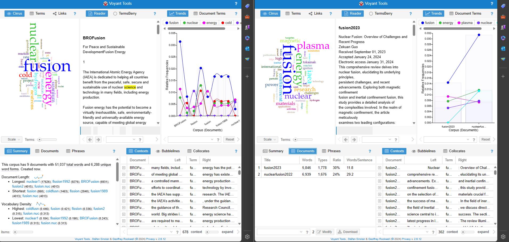

Here are the text files in a smaller format, labeled by year they were published.
Heres a collective gallery of all my screenshots of the text anylsis of Voyant and Antconc.

Upon comparing and reading through 10 different text files, we see that nuclear fusion is always evolving, constantly changing from new discoverys and such. Nuclear fusion has been researched since its first detection back in 1933. I compared these files to see the difference in wording and technologies used in nuclear fusion.
In the older documents reviewed we see that they mention more terms like "cold fusion" "neutrons" "electrosyis", clearly focused on the aspects of cold fusion which was the die hard belelif at that time.
The more recent documents from 2022 and 2023 mention more about energy sustanabilie and plasma, focusing more on finding a sustaniable energy source for the world. The more recent documents are more globably focused then the older ones.
We see how more of the technology has moved from to a global and public focus compared to a more general scietific use.
As time progresses we see how the general idea has moved to a find a "sustaniable" energy source. The focus now is more on evnviromental impact in the future and the role of fusion in our future aswell.
These text files compare how te terms show a progression from a experimtneal project to a more envirometnally focused idea, showcasing societys push towards cleaner energy. The comparison shows the advance of the field of nuclear fusion as it was once a unusable science to a potential energy source that solves globabl problems.